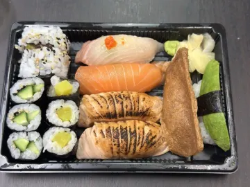
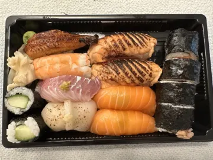
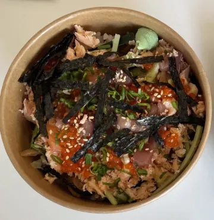

Best Sushi in Helsinki: How to Tell Great Sushi From Buffet Rolls
Sushi is the most common Japanese food in Finland, and also the most uneven. A €15 buffet and a 16-seat omakase counter both say "sushi" on the door. Here's how to tell what you're getting and find the plates worth coming back for.
The three kinds of sushi places in Helsinki

- Sushi buffets and conveyor belts. Cheap and filling, heavy on salmon and creative rolls. Fine for a quick lunch, but rarely what people mean by "the best sushi".
- Japanese restaurants with a sushi menu. Nigiri, sashimi and moriawase (assorted platters) next to cooked dishes. Often the best value.
- Sushi counters and omakase. You sit at the counter and the chef decides the sequence. Few seats, so book ahead.
How to judge sushi quality
- Start with the rice. Good sushi rice (shari) is body-temperature, lightly seasoned with vinegar, and holds together until it reaches your mouth. Cold, dense or sugary rice is the first red flag.
- Look at the variety of fish. If the whole menu is salmon, the kitchen is buying for volume. Tuna, yellowtail, white fish, shellfish and seasonal specials point to a place that buys for quality.
- Order nigiri or sashimi, not only rolls. Sauces and toppings hide everything. A plain piece of nigiri can't hide anything.
- Wasabi and soy should be optional. At a good counter the chef seasons each piece, so you often won't need either.
Sushi-adjacent dishes worth trying
Many of the best Japanese meals in Helsinki aren't nigiri at all: chirashi (sashimi over rice), unadon (grilled eel bowl), and tempura moriawase. Rice bowls get their own guide: katsudon, gyudon and other donburi in Helsinki.
From the Savory Scores data
Top-rated sushi in Helsinki
| Photo | Dish | Restaurant | Score | Authenticity | Ratings | Last rated |
|---|---|---|---|---|---|---|
 | Omakase nigiri | Sushi WagocoroHelsinki | 10 | 10 | 2 | May 2025 |
 | Nigiri set | RojiHelsinki | 10 | 10 | 1 | Apr 2025 |
 | Set A | RojiHelsinki | 9 | 9 | 1 | Jun 2025 |
 | Roji set | RojiHelsinki | 9 | 8 | 1 | Apr 2025 |
| Lohi | Raito SushiHelsinki | 8 | – | 1 | May 2024 | |
 | Chirashi-sushi (Sushi bowl) | Ravintola KamomeHelsinki | 7 | – | 1 | Jun 2022 |
Based on 15 ratings at 12 places in the Helsinki area, as of October 2026. Scores and authenticity are averages out of 10. Most dishes have only one or two ratings so far, and menus change, so check the app for the live ranking. Ate somewhere that should be on this list? Rate it in Savory Scores.
How to find the best sushi in Helsinki with Savory Scores
- Search the exact dish, such as Sushi moriawase, Sashimi or Chirashi, instead of just "sushi". Every rated version in Helsinki appears with a photo.
- Sort by authenticity to separate traditional sushi from fusion rolls, or by score to see what people would order again.
- Check the photo. Real photos from real visits tell you more about portion and quality than a menu.
- Save the place and open it in Maps when it's time to book.
- Rate your meal afterwards. Would you have it again? Your rating helps the next person and builds your own sushi top list.
Find your favourite in Helsinki. Savory Scores is free for iPhone and iPad: search a dish, compare every version in town, and rate it in one tap.